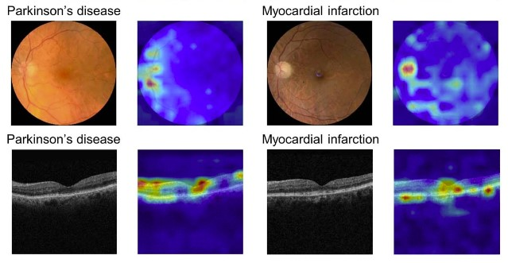
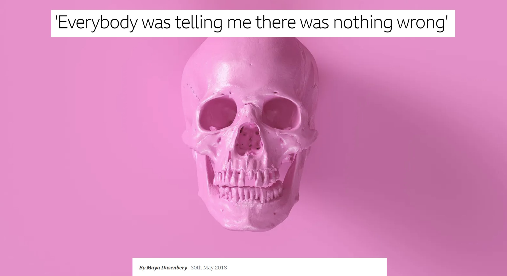
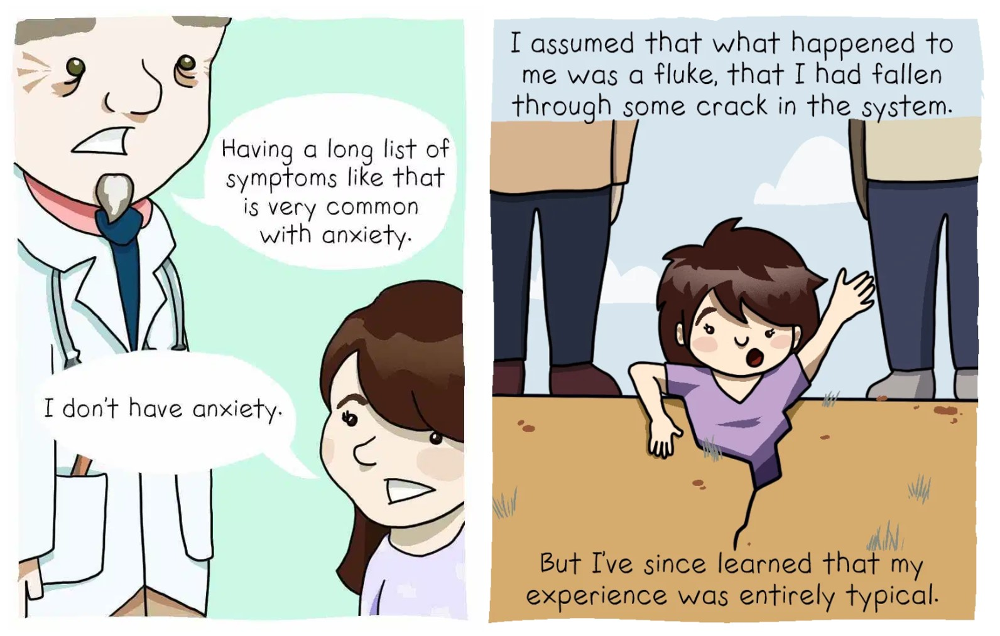

AI has made remarkable strides in the medical field, with capabilities including the detection of Parkinson’s disease via retinal images, identification of promising drug candidates, and prediction of hospital readmissions. While these advance are exciting, I’m wary of the practical impact AI will have on patients.
I recently watched a late-night talk show where skeptics and enthusiasts debated AI safety. Despite their conflicting views, there was one thing they could all agree upon. “AI will cure cancer,” one panelist declared, and everyone else confidently echoed their agreement. This collective optimism strikes me as overly idealistic and raises concerns about a failure to grapple with the realities of healthcare.

My reservations about AI in medicine stem from two core issues: First, the medical system often disregards patient perspectives, inherently limiting our comprehension of medical conditions. Second, AI is used to disproportionately benefit the privileged while worsening inequality. In many instances, claims like “AI will cure cancer” are being invoked as little more than superficial marketing slogans. To understand why, it is first necessary to understand how AI is used, and how the medical system operates.
How Automated Decision Making is Used
Automated computer systems, often involving AI, are increasingly being used to make decisions that have a big impact on people’s lives: determining who gets jobs, housing, or healthcare. Disturbing patterns are found across numerous countries and a range of systems: there is typically no way to surface or correct errors, and all too often the goal is to increase corporate and government revenues by denying poor people resources they need to survive.
A woman in France had her food benefits reduced by a computer program and can no longer afford enough to eat. She talked to a program officer, who said the cut was due to an error in the computer program, but was unable to change it. She did not have her food benefits reinstated. The system was designed such that the computer is always considered correct, even when humans recognize an error. This woman was not alone; she was one of 60,000 people who went hungry due to these errors.
A man in Australia was told that he had been overpaid welfare benefits and that he was now in debt to the government. The debt was an error, based on an intentionally faulty calculation as part of the computational RoboDebt program. However, the man had no way to contest it. Despondent, he died by suicide. This was not a one-off incident. The Australian government was later found to have wrongly created debts for hundreds of thousands of people.They were putting poor people into debt with a flawed calculation system, ruining lives efficiently at scale. The government had increased the number of poor people it put into debt each week by 50x, compared to before RoboDebt.
A woman in the USA with cerebral palsy needed a health aid to help her get out of bed in the morning, to get her meals, and to complete other basic tasks. Her care was drastically cut due to a computer bug. She was given no explanation and no option for recourse as her quality of life drastically plummeted. Only through a lengthy court case was it finally revealed that many people with cerebral palsy had wrongly lost their care due to a computer error.
Patterns in Automated Decision Making
These examples always flow in the same direction. Professor Alvaro Bedoya, the founding director of the Center on Privacy and Technology at the Georgetown University Law Center, wrote “It is a pattern throughout history that surveillance is used against those considered ‘less than’, against the poor man, the person of color, the immigrant, the heretic. It is used to try to stop marginalized people from achieving power.” The same pattern is found in the role of technology in decision systems.
The goal of many automated decision systems is to increase revenues for governments and private companies. When this is applied to health and medicine, the goal is often achieved by denying poor people food or medical care. People often trust computers to be more accurate than humans, in a bias known as automation bias. A systematic review of 74 research studies found that automation bias exists across a range of fields, including healthcare, exerting a consistent influence. This bias can make it harder for people to recognize errors in automated decision-making. Moreover, implementing mechanisms to identify and correct errors is often seen as an unnecessary expense.
In all of the cases above, the people most impacted (those losing access to needed food or medical care, or unjustly being thrown into debt) recognized the errors in the system earliest. Yet the systems were built with no mechanism for recognizing mistakes, for allowing the participation of those impacted, nor for providing recourse to those harmed. Unfortunately, this can also be the case in medicine.
How the Medical System Operates
An AI algorithm that reads MRIs more accurately would not have helped neurologist Ilene Ruhoy, MD, PhD, when she developed a 7 cm brain tumor. The key obstacle to her treatment was getting fellow neurologists to believe her symptoms and even order an MRI in the first place. “I was told I knew too much, that I was working too hard, that I was stressed out, that I was anxious,” Dr. Ruhoy recounts. Eventually, after her symptoms worsened further, she was able to get an MRI and urgently sent in for a 7 hour surgery. Because of the delay in her diagnosis, her tumor was so large that it could not be completely removed, which has led to it growing back since her first surgery.
Dr. Ruhoy’s experience is sadly common. While Dr. Ruhoy lives in the USA, a study in the UK found that almost 1 in 3 patients with brain tumors had to visit doctors at least 5 times before receiving an accurate diagnosis. Again, MRI-reading AI can not help these patients whose doctors won’t order an MRI in the first place. On average, it takes Lupus patients 7 years to receive a correct diagnosis, and 1 in 3 are initially misdiagnosed with doctors incorrectly claiming mental health issues are the root of their symptoms. Even healthcare workers are often shocked at how quickly they are dismissed and disbelieved once they become patients. For instance, interviews with a dozen healthcare workers revealed that their colleagues shifted to discarding their expertise as soon as they developed Long Covid.

This disregard of patient experience and patient expertise severely limits medical knowledge. It results in delayed diagnoses, misdiagnoses, missing data, and incorrect data. AI is great at finding patterns in existing data. However, AI will not be able to solve this problem of missing and erroneous underlying data. Furthermore, there is a negative feedback loop around lack of medical data for poorly understood diseases: doctors disbelieve patients and dismiss them as anxious or complaining too much, failing to gather data which could help illuminate the disease.
The Wrong Data
Even worse, often research problems are reformulated to shoe-horn inadequate data sources in. Analyzing electronic health record data is cheaper than searching for new causal mechanisms. Medical data is often limited by the categories of billing codes, by what doctors choose to note from a patient’s account, and what tests are ordered. The data are inherently incomplete.
Medical bias is widespread, with studies documenting that doctors give less pain medication to Black patients than to white patients for the same conditions. On average, women have to wait months or years longer than men to get an accurate diagnosis for the same conditions. This impacts the data that is collected and will be used for AI. Multiple research studies have shown that AI not only encodes existing biases, but can also amplify their magnitude. At heart, these biases often pivot on not believing marginalized people about their experiences: not believing when they say that they are in pain nor how they report their symptoms.

On a deeper level, ignoring patient expertise limits what hypotheses are devised, and can slow research progress. These issues will propagate into AI, unless researchers seek ways to include meaningful patient participation. These problems are not unique to any one country or any one type of medical system. Patients across the USA, UK, Australia, and Canada (the 4 countries I am most familiar with) are all well-documented to experience these issues.
Being Honest About the Risks and Opportunities
While AI holds transformative possibilities for medicine, it is important that we are clear-eyed about both the risks and the opportunities. Many talks on Medical AI give the impression that the only thing holding medicine back is a lack of knowledge. The many other factors that influence medical care, including the systematic disregard for patients’ knowledge of their own experiences, are often ignored in these discussions. Ignoring these realities will lead people to design AI for an idealized medical system that does not exist. There is already a clear pattern in which AI is used to centralize power and harm the marginalized. In medicine, this could lead to patients, who are already disempowered and often disregarded, having even less autonomy or voice.
In my view, some of the most promising areas of research are participatory approaches to machine learning and patient-led medical research. The Participatory Approaches to Machine Learning workshop at ICML included a powerful collection of talks and papers on both the need and the opportunities for designing systems with greater participation of those impacted. AI ethics work on topics of contestability (building in ways for participants to contest outputs) and actionable recourse are necessary. For medical research more generally, the Patient Led Research Collaborative (focused on Long Covid) is an encouraging model. I hope that we can see more efforts within medical AI to center patient expertise.
For further reading / watching:
- AI, Medicine, and Bias: Diversifying Your Dataset is Not Enough - my keynote talk at the Stanford AI in Medical Imaging symposium
- Medicine’s Machine Learning Problem - my Boston Review article on medicine and AI
- ‘Everybody was telling me there was nothing wrong’ - BBC article by Maya Dusenberry
- Medicine’s Women Problem - comic by Aubrey Hirsch
- AI and Power: The Ethical Challenges of Automation, Centralization, and Scale - a deeper dive into how AI centralizes power
- How the EU’s Flawed Artificial Intelligence Regulation Endangers the Social Safety Net - Human Rights Watch
Thank you to Jeremy Howard and Krystal South for providing feedback on earlier drafts of this post.
You can subscribe to be notified of new blog posts by submitting your email below:
I look forward to reading your responses. Create a free GitHub account to comment below.